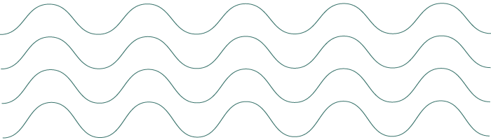

Magdalena Fuentes

I am Assistant Professor of Music Technology and Integrated Design & Media at New York University. My students and I are part of the Music and Audio Research Laboratory (MARL) and the Integrated Design & Media (IDM) program. I grew up in Uruguay, studied electrical engineering at Universidad de la República, and did my Ph.D. at Université Paris-Saclay. I work on machine listening: signal processing and machine learning that help computers make sense of music and the sounds around us.
I’m interested in methods at the intersection of sound, vision, and language, and in applying them to music information retrieval, environmental sound analysis, multimodal analysis and synthesis, and accessibility and health. I also spend time teaching and building research communities, especially around Latin American music and audio.
Magdalena Fuentes
Multimodal Adaptive Audio
and Music Processing
I am Assistant Professor of Music Technology and Integrated Design & Media at New York University. My students and I are part of the Music and Audio Research Laboratory (MARL) and the Integrated Design & Media (IDM) program. I grew up in Uruguay, studied electrical engineering at Universidad de la República, and did my Ph.D. at Université Paris-Saclay. I work on machine listening: signal processing and machine learning that help computers make sense of music and the sounds around us.
I’m interested in methods at the intersection of sound, vision, and language, and in applying them to music information retrieval, environmental sound analysis, multimodal analysis and synthesis, and accessibility and health. I also spend time teaching and building research communities, especially around Latin American music and audio.
Affiliations
Assistant Professor of Interactive Design, Music and Sound
New York University
Music Technology at Steinhardt School of Culture, Education, and Human Development.
Integrated Design & Media (IDM) at Tandon School of Engineering.
Core Faculty
Music and Audio Research Laboratory (MARL)
Affiliated Faculty
Department of Computer Science and Engineering
Tandon School of Engineering, New York University